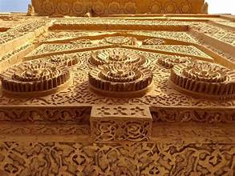
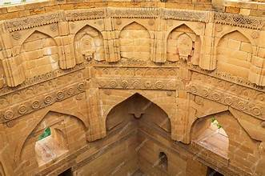

Makli Necropolis
One of the largest funerary sites in the world, a UNESCO World Heritage Site in Sindh, Pakistan.
One of the largest funerary sites in the world, a UNESCO World Heritage Site in Sindh, Pakistan.
The Makli Necropolis, located near Thatta in Sindh, is among the largest graveyards in the world, covering an area of approximately 10 square kilometers. It is the final resting place of over half a million people, including kings, queens, saints, scholars, and soldiers.
The site, inscribed as a UNESCO World Heritage Site in 1981, reflects over 400 years of Sindh’s cultural, religious, and architectural heritage, blending Islamic, Hindu, Persian, and Mughal styles. It remains a significant landmark of South Asian history.
The necropolis showcases a fusion of diverse architectural traditions, with tombs and mausoleums built in sandstone and decorated with glazed tiles, calligraphy, and floral motifs. The monuments include large domed structures, intricately carved canopies, and finely detailed facades.
Distinctive features include stone-carved latticework, Quranic inscriptions, and Hindu-inspired decorative patterns. The tombs of rulers such as Jam Nizamuddin II and Isa Khan Tarkhan the Younger are considered masterpieces of Makli’s artistic legacy.
